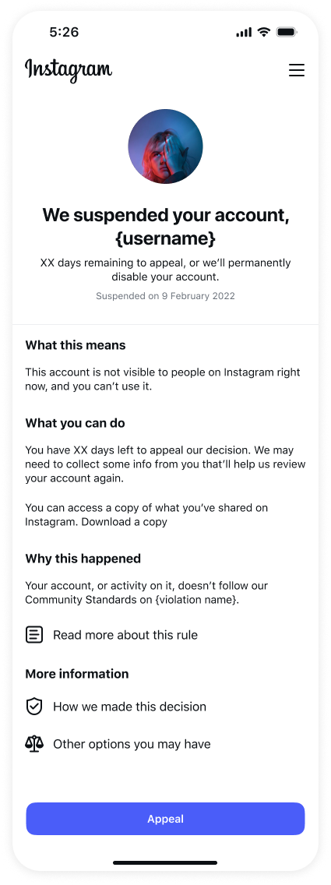
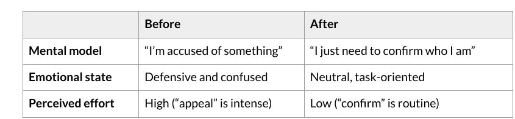
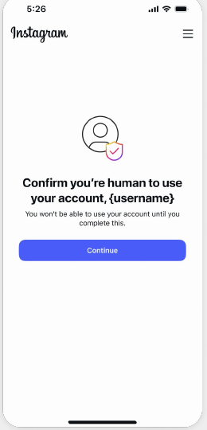
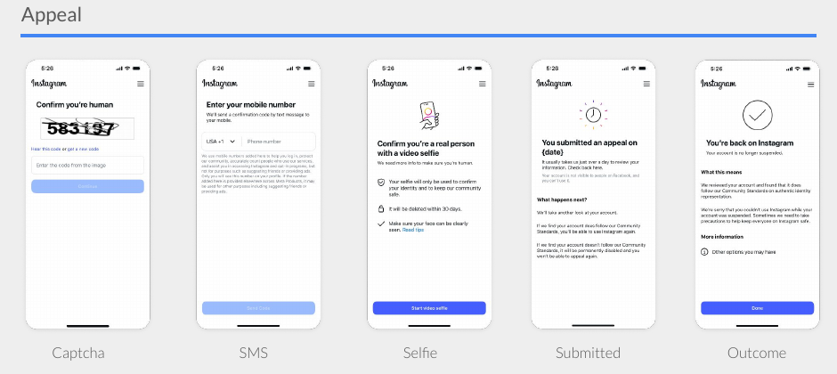

Meta disables millions of bot accounts every day, and most of them are caught at registration, before an account ever does anything. A small share of those disabled accounts belong to real people who got flagged by mistake. They can get back in by completing an identity-verification flow, but first they have to see a notice telling them their new account was disabled, and decide to act on it.

10–20% of real users dropped off right here and never started an appeal — thousands of people locked out of the accounts they'd just created, every single day. Looking at the screen, it wasn't hard to see why:
How might we nudge users to start an appeal, so that users can quickly use their new accounts?
I overhauled the content strategy for the flow, reframing it from an enforcement notice into a standard identity-confirmation task. Removing the enforcement framing meant stripping out anything that cast the moment as an accusation, replacing the intimidating "Appeal" CTA with plain, forward-moving language, and rebuilding the verification steps around a single, calm idea: confirm who you are.

One thing that made this possible: Meta is required to tell users what happened, why, and what they can do for account enforcements — but I confirmed with policy and legal that requirement doesn't apply to bot enforcements. That gave me room to simplify the screen down to what people actually needed.

From there, users move through a short verification flow: a captcha, SMS confirmation, a selfie check, a submission screen, and an outcome.

Beyond the numbers, the project made the case — with data — for how much leverage content strategy alone has in a flow like this, and opened the door to further investment.